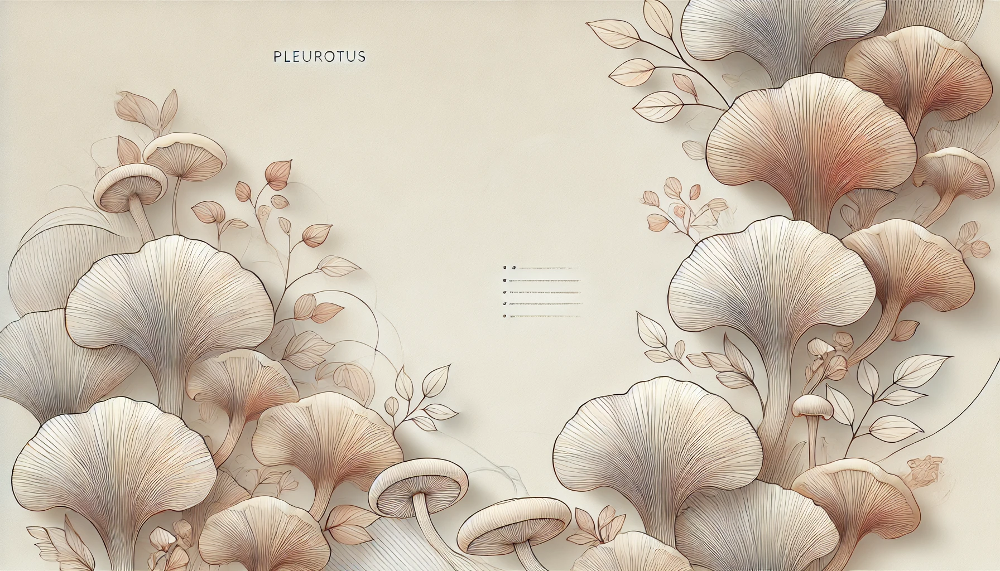

Personajul
viu
om-ciupercă în iarbă
Ciuperman
Registrul de pădure
We are the Champignions, my friend!
Un personaj din iarbă și un caiet public pentru povești scurte: ciuperci, vreme, poteci. Fără magazin. Fără slogan de agenție.
Personajul
viu
om-ciupercă în iarbă
Pădurea
în lucru
sigiliu vizual
Filmele
așteaptă
canal real, nu generic

Trei rânduri active. Restul se adaugă când există material, nu înainte.
Om-ciupercă în iarba din Carpați. Cap ras, barbă scurtă, emblemă. Nu este un supererou de oraș.
Desenul de pe pagină rămâne sigiliul vizual până există un portret oficial.
Poveștile lungi stau pe video. Canalul se leagă aici când adresa e reală, nu pagina generică YouTube.
Nu este o firmă. Este un nume sub care se adună desene, filme și note din zonă de munte.
Tonul e serios față de natură și lejer față de sine. Site-ul ține cadrul; poveștile trăiesc în iarbă și pe ecran.
Următoarele rânduri din registru: portretul personajului, apoi un canal cu piesă gata de arătat.